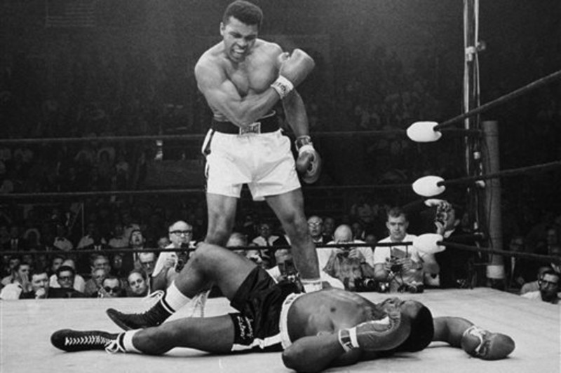

Ranking the 10 Best Fights of Muhammad Ali's Career
10. Chuck Wepner (TKO 15, March 24, 1975)
1 OF 10OK, we'll concede that the 1975 meeting of Ali and Chuck Wepner was no creative masterpiece. Ali was a past-prime 33-year-old, and Wepner's best offensive strategies consisted of roughhousing and fouling the reigning champion. Nevertheless, something great did emerge from Ali's otherwise forgettable 15th-round TKO win. Inspired by the performance of the prohibitive underdog—who scored a ninth-round knockdown—aspiring actor/screenwriter Sylvester Stallone produced a script for what ultimately became Rocky, which won an Academy Award for best picture in 1977.
9. Joe Frazier (UD 12, Jan. 28, 1974)
2 OF 10Though the heavyweight landscape had changed dramatically since their "Fight of the Century" first meeting, it was still Ali and Joe Frazier on the Madison Square Garden marquee three years later. And that alone warrants inclusion on any list. The second go-round was marked by continued tension between the two in the run-up, and another bull-matador dynamic in the ring, though Ali was able to rock Frazier badly in Round 2—prompting some to believe Smokin' Joe was saved when referee Tony Perez mistakenly heard a bell. Ali ultimately won a unanimous decision, taking 21 of 36 rounds across three scorecards.
8. Earnie Shavers (UD 15, Sept. 29, 1977)
3 OF 10Because he was so memorable with his words on the outside, people sometimes lose sight of the fact that Ali consistently displayed heart and smarts inside the ring. Rarely were those qualities more evident than in 1977 against Earnie Shavers. The shaven-headed Ohioan was a murderous puncher and rocked Ali several times, particularly in Round 2. But the 35-year-old champion stood his ground, dug into his reservoir and eventually produced a memorable 15th-round rally that sealed the beaten challenger's scorecard fate. Ali's narrow unanimous decision was the penultimate win of his career.
7. Ernie Terrell (UD 15, Feb. 6, 1967)
4 OF 10For those who recall Ali as a smart-alecky but generally congenial warrior, his 1967 match with Ernie Terrell could be a jarring revelation. Now only was the 25-year-old champion at the top of his physical game, but his mean streak was in full view as he punished Terrell for continually referring to him as "Clay" rather than "Ali." His "What's my name?" taunts are audible as he batters his foe, but he continually steps off the gas in time to keep referee Harry Kessler from intervening. The torture lasted a full 15 rounds — Ali won 13 on all three scorecards—and it wound up as the second-to-last win before his forced three-year ring exile.
6. Cleveland Williams (TKO 3, Nov. 14, 1966)
5 OF 10If you grade a list on prowess alone, this may have been Ali's peak fight. It was the seventh defense of a reign that had not yet reached three years, and challenger Cleveland Williams was on the decisively short end of a display that saw Ali land his jab at will and continually rattle his foe with blinding combinations. Williams had 51 KOs on his resume but barely landed a punch. Three second-round knockdowns preceded a third round in which Williams was quickly dropped for the fourth and final time, bringing the end after just seven minutes, eight seconds. It was clinical. It was violent. It was beautiful.
5. Leon Spinks (UD 15, Sept. 15, 1978)
6 OF 10Ali had lost twice in 57 fights before stubbing his toe on seven-fight novice Leon Spinks less than two years after the kid struck gold at the 1976 Summer Olympics in Montreal. But while the loss added an unlikely smudge to his resume, it also set the stage for what should have been an ovation-worthy farewell seven months later. A 36-year-old Ali took 10, 10 and 11 of 15 rounds on three scorecards and became the first man to win the heavyweight title three times. Not his best work, but if this would have been goodbye, no one would have complained. Instead, he ultimately came back for two more, but this was the last of his 56 career victories.
4. Joe Frazier (L UD 15, March 8, 1971)
7 OF 10It's not often a loss would make a 10-best list. But it's not often a loss comes with the circumstances of Ali-Frazier I. Taking into account that he'd fought fewer than 18 full rounds in the previous three-plus years, it's amazing enough that Ali lasted a full 15 with a prime and ferocious version of Smokin' Joe. And even though Frazier dropped him with a hellacious left hand in the final round, Ali rose and took his medicine in the form of a unanimous-decision defeat that was the first of his career. Other fights have passed it in terms of revenue and viewership, but this one still reigns as the pinnacle moment of the heavyweight division. And even though he lost, it's not often that Ali surpassed the level he reached that night.
3. Sonny Liston (TKO 7, Feb. 25, 1964)
8 OF 10The legend had to begin somewhere, right? In this case, it was when a brash, unproven 22-year-old kid stepped into the ring against a veteran slugger who'd won and defended the heavyweight title with consecutive one-round KOs of his predecessor. It was little wonder, then, that Sonny Liston was a prohibitive favorite. But after 18 minutes of ring action, the sport would never be the same. Ali, in his last fight as Cassius Clay, confounded the slower Liston with improbably fast hands and feet and ultimately prompted his surrender—reportedly due to a balky shoulder—before Round 7.
2. Joe Frazier (TKO 14, Oct. 1, 1975)
9 OF 10Neither Ali nor Frazier was in 1975 what he had been four years earlier. But that didn't mean they couldn't get together to produce a classic—and, as it turned out, a trilogy finale that's become the measuring stick for all who have followed. The Thrilla in Manila was a back-and-forth battle for the early going before Ali pulled away in the later stages and eventually forced Frazier's chief second, Eddie Futch, to surrender before Round 15. But even in a win, he referred to it as the closest thing to death he'd ever experienced.
1. George Foreman (KO 8, Oct. 30, 1974)
10 OF 10For a guy who made a career of improbable wins, none exceeded the Rumble in the Jungle. A decade after toppling Liston, a 32-year-old version of Ali met the next big thing—a 25-year-old George Foreman, who was 37-0 with 34 knockouts and two-round stoppages of both Frazier and Ken Norton, the only two men who'd beaten the challenger. But rather than meeting disaster, Ali provided drama. He displayed his brilliance in the unlikely form of rope-a-dope passivity, then gradually took the offensive initiative as his wide-swinging challenger was reduced to performing on fumes. And by the time Round 8 neared a close, Foreman was stumbling to the canvas and providing an image that'll live on long after anyone who saw it in real time is gone.